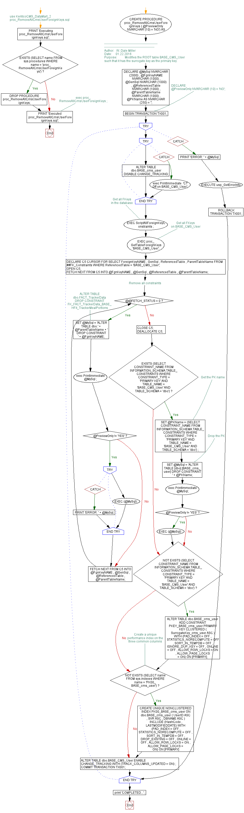

<a href="proc_RemoveAllCmsUserForeignKeys.png"></a>
-- use KenticoCMS_DataMart_2 -- proc_RemoveAllCmsUserForeignKeys.sql GO PRINT 'Executing proc_RemoveAllCmsUserForeignKeys.sql'; GO IF EXISTS (SELECT name FROM sys.procedures WHERE name = 'proc_RemoveAllCmsUserForeignKeys') BEGIN DROP PROCEDURE proc_RemoveAllCmsUserForeignKeys; END; -- exec proc_RemoveAllCmsUserForeignKeys ; GO CREATE PROCEDURE proc_RemoveAllCmsUserForeignKeys ( @PreviewOnly NVARCHAR (10) = 'NO') AS /*----------------------------------------------------------------------------------------------------- Author: W. Dale Miller Date: 01.22.2016 Purpose: Modifies the ROOT table BASE_CMS_User such that it has the surrogate key as the primary key. */ BEGIN DECLARE @MySql NVARCHAR (2000) , @FgnKeyNAME NVARCHAR (1000) , @GenSql NVARCHAR (1000) , @ReferencedTable NVARCHAR (1000) , @ParentTableName NVARCHAR (1000) , @PKName AS NVARCHAR (250) = ''; --DECLARE -- @PreviewOnly NVARCHAR (10) = 'NO'; BEGIN TRANSACTION TX001; BEGIN TRY BEGIN TRY ALTER TABLE dbo.BASE_cms_user DISABLE CHANGE_TRACKING; END TRY BEGIN CATCH exec PrintImmediate 'CT Off on BASE_CMS_User'; END CATCH; -- Get all FKeys in the database EXEC ScriptAllForeignKeyConstraints ; -- Get all FKeys on BASE_CMS_User EXEC proc_GetTableForeignKeys 'BASE_CMS_User'; DECLARE C5 CURSOR FOR SELECT ForeignKeyNAME , GenSql , ReferencedTable , ParentTableName FROM ##FK_Constraints WHERE ReferencedTable = 'BASE_CMS_User'; OPEN C5; FETCH NEXT FROM C5 INTO @FgnKeyNAME , @GenSql , @ReferencedTable , @ParentTableName; -- Remove all constraints WHILE @@FETCH_STATUS = 0 BEGIN --ALTER TABLE dbo.FACT_TrackerData DROP CONSTRAINT FK_FACT_TrackerData_BASE_HFit_TrackerMealPortions SET @MySql = 'ALTER TABLE dbo.' + @ParentTableName + ' DROP CONSTRAINT ' + @FgnKeyNAME; exec PrintImmediate @MySql ; IF @PreviewOnly != 'YES' BEGIN BEGIN TRY EXEC (@MySql) ; END TRY BEGIN CATCH PRINT 'ERROR: ' + @MySql; END CATCH; END; FETCH NEXT FROM C5 INTO @FgnKeyNAME , @GenSql , @ReferencedTable , @ParentTableName; END; CLOSE C5; DEALLOCATE C5; IF EXISTS (SELECT CONSTRAINT_NAME FROM INFORMATION_SCHEMA.TABLE_CONSTRAINTS WHERE CONSTRAINT_TYPE = 'PRIMARY KEY' AND TABLE_NAME = 'BASE_CMS_User' AND TABLE_SCHEMA = 'dbo') BEGIN -- Get the PK name SET @PKName = (SELECT CONSTRAINT_NAME FROM INFORMATION_SCHEMA.TABLE_CONSTRAINTS WHERE CONSTRAINT_TYPE = 'PRIMARY KEY' AND TABLE_NAME = 'BASE_CMS_User' AND TABLE_SCHEMA = 'dbo') ; -- Drop the PK SET @MySql = 'ALTER TABLE [dbo].[BASE_cms_user] DROP CONSTRAINT ' + @PKName; exec PrintImmediate @MySql; IF @PreviewOnly != 'YES' BEGIN EXEC (@MySql) ; END; END; IF NOT EXISTS (SELECT CONSTRAINT_NAME FROM INFORMATION_SCHEMA.TABLE_CONSTRAINTS WHERE CONSTRAINT_TYPE = 'PRIMARY KEY' AND TABLE_NAME = 'BASE_CMS_User' AND TABLE_SCHEMA = 'dbo') BEGIN ALTER TABLE dbo.BASE_cms_user ADD CONSTRAINT PKEY_BASE_cms_user PRIMARY KEY CLUSTERED ( SurrogateKey_cms_user ASC ) WITH (PAD_INDEX = OFF , STATISTICS_NORECOMPUTE = OFF , SORT_IN_TEMPDB = OFF , IGNORE_DUP_KEY = OFF , ONLINE = OFF , ALLOW_ROW_LOCKS = ON , ALLOW_PAGE_LOCKS = ON) ON [PRIMARY]; END; -- Create a unique performance index on the three common columns IF NOT EXISTS (SELECT name FROM sys.indexes WHERE name = 'PK00_BASE_cms_user') BEGIN CREATE UNIQUE NONCLUSTERED INDEX PK00_BASE_cms_user ON dbo.BASE_cms_user ( UserID ASC , SVR ASC , DBNAME ASC ) INCLUDE (HashCode , LASTMODIFIEDDATE) WITH (PAD_INDEX = OFF , STATISTICS_NORECOMPUTE = OFF , SORT_IN_TEMPDB = OFF , DROP_EXISTING = OFF , ONLINE = OFF , ALLOW_ROW_LOCKS = ON , ALLOW_PAGE_LOCKS = ON) ON [PRIMARY] END; ALTER TABLE dbo.BASE_CMS_User ENABLE CHANGE_TRACKING WITH (TRACK_COLUMNS_UPDATED = ON) ; COMMIT TRANSACTION TX001; END TRY BEGIN CATCH PRINT 'ERROR: ' + @MySql; EXECUTE usp_GetErrorInfo; ROLLBACK TRANSACTION TX001; END CATCH; print 'COMPLETED...' ; END; GO PRINT 'Executed proc_RemoveAllCmsUserForeignKeys.sql'; GO
Hide code
Visustin flow chart for T-SQL